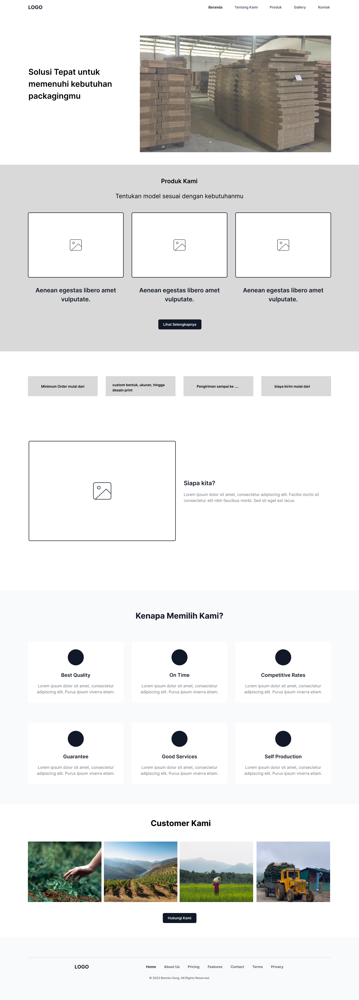
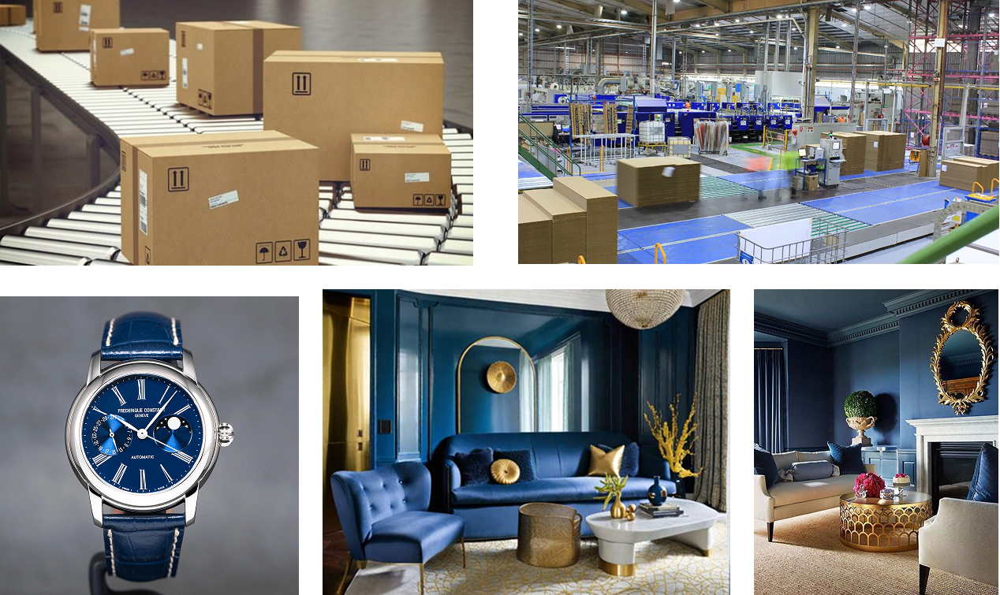
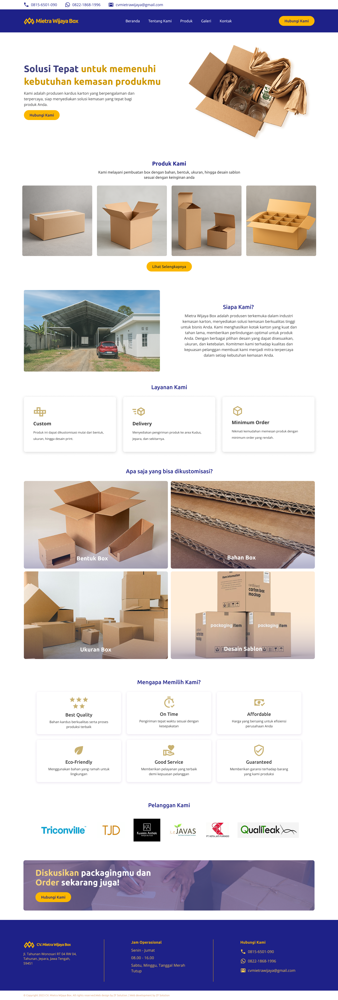
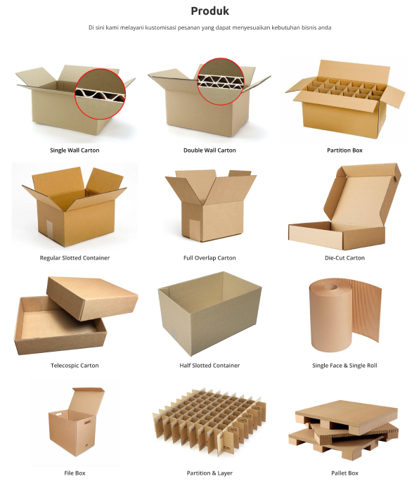

Ringkasan Proyek
Jenis Projek
Projek Pribadi (Freelance)
Peran Saya
Web Designer, UI Designer
Linimasa
1 Minggu (Maret 2025)
Tools
Figma
Masalah (The Problem)
Sebuah perusahaan manufaktur carton box yang sudah lama berdiri belum memiliki kehadiran digital yang profesional. Di era yang sudah semakin canggih ini perusahaan harus memiliki website yang baik untuk menarik klien korporat yang lebih besar.
Tujuan: Membuat desain website perusahaan (landing page) agar terlihat modern, profesional, dan informatif. Website harus mampu membangun kepercayaan dan berfungsi sebagai alat pemasaran utama untuk menjangkau klien baru.
Proses Desain
Fokus utama adalah pada struktur informasi dan citra visual. Saya ingin pengunjung bisa langsung memahami keunggulan perusahaan dalam 30 detik pertama.
1. Arsitektur Informasi
Saya menyusun ulang struktur landing page menjadi beberapa bagian kunci: Hero Section (headline yang kuat), Tentang Kami, Jenis Produk, Keunggulan, dan Kontak.
2. Moodboard & Desain Visual
Saya membuat moodboard dengan nuansa warna korporat yang terpercaya dan memberikan kesan mewah(biru, kuning emas, putih) yang mana biru itu sendiri merupakan warna identitas dari perusahaan tersebut, dipadukan dengan warna coklat dari kardus untuk sentuhan otentik. Desain visual dibuat bersih, dengan banyak ruang kosong dan menggunakan fotografi produk berkualitas tinggi.
Solusi Desain
Hasil akhirnya adalah sebuah landing page satu halaman (one-page) yang modern dan responsif, yang menceritakan kisah perusahaan secara visual dan ringkas.
Hero Section yang Meyakinkan
Menampilkan gambar pabrik atau produk unggulan dengan headline yang jelas, seperti "Solusi Kemasan Terpercaya untuk Bisnis Anda", disertai dengan logo klien-klien besar untuk membangun social proof.
Galeri Produk yang Jelas
Bagian ini tidak berfungsi sebagai e-commerce, melainkan sebagai galeri untuk menunjukkan kapabilitas perusahaan. Setiap jenis box (misal: single wall, double wall, die-cut) ditampilkan dengan gambar berkualitas dan deskripsi singkat.
Hasil & Pembelajaran
Website baru ini berhasil meningkatkan citra perusahaan secara signifikan. Pelajaran penting dari proyek ini adalah bagaimana desain visual yang bersih dan arsitektur informasi yang logis dapat secara langsung membangun kepercayaan. Untuk website company profile, kejelasan dan profesionalisme jauh lebih penting daripada fitur yang kompleks.